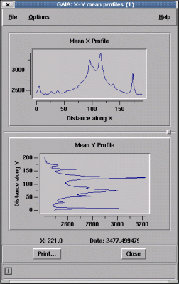

XY Profiles
The XY Profiles toolbox displays the mean X and Y profiles of a rectangular region. If the rectangle is moved the profiles will update in real time. This is useful for detecting background trends and binning up linear features.The toolbox has some usage help
